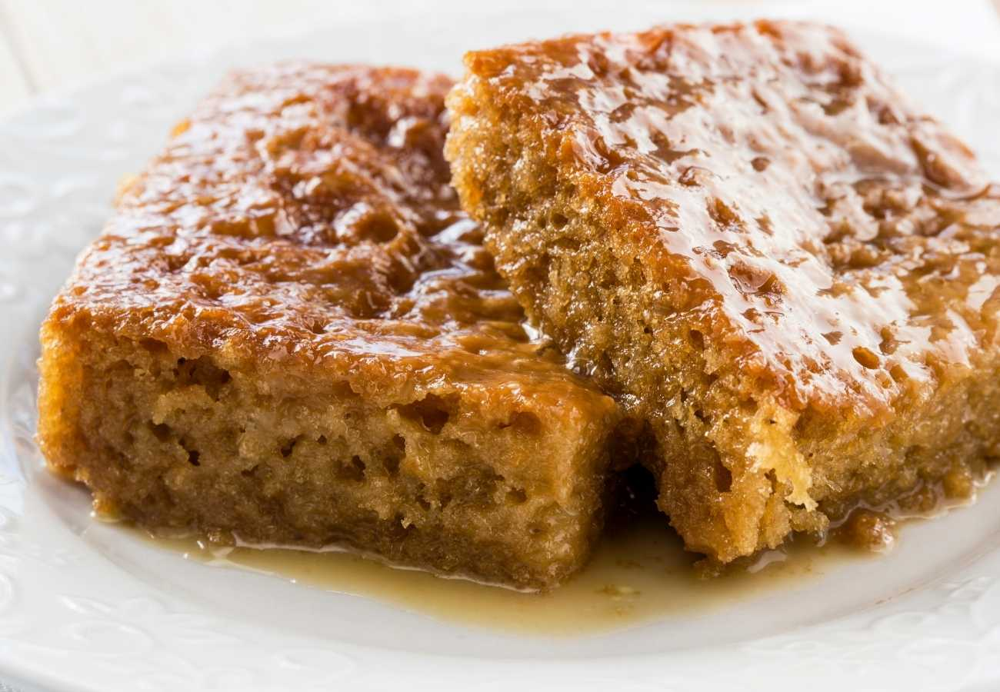

Malva Pudding

Prep Time: 20 mins
Yield: 6 servings
Ingredients:
- 1 cup flour
- 1 teaspoon baking soda
- Pinch of salt
- 1 cup sugar
- 2 tablespoons butter
- 1 tablespoon vinegar
- 1/2 cup milk
- 1 egg
- 1 teaspoon apricot jam
Steps:
- Preheat oven to 180°C (350°F) and grease a baking dish.
- Mix flour, baking soda, and salt in a bowl.
- Cream sugar and butter together, then add the egg and apricot jam.
- Combine dry ingredients with wet mixture and stir in milk and vinegar.
- Pour batter into the baking dish and bake for about 30 minutes until golden.
- Prepare a simple sauce of warmed butter, sugar, milk, and vanilla.
- Pour the sauce over the warm pudding and let it soak in.
- Serve warm with custard or ice cream and enjoy!